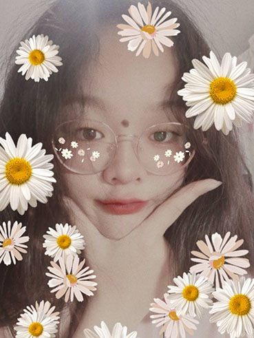
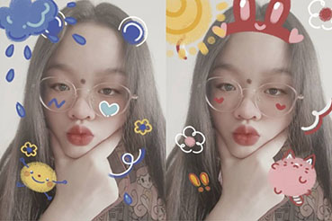

大家好!我叫倪慧~
大家好 ! 我叫倪慧~
我是一名大学生，今年20岁。是经管系18级电子商务班的一名成员~
是一个正在积极生活的乐天派~ 是个好学上进、敬业、责任心强，有团体精神，对工作认真积极、负责的人(＠￣ー￣＠)
本人性格内外结合，适应能力强，为人诚实，人际交往能力还可以，具备一些专业知识哒。细心、耐心的工作态度及良好的职业道德修养。相信团体精神的我对工作认真负责，总希望能把事情做得更好!（有轻微的强迫症...）我可以在短期间内适应新环境，有着强烈的品质意识;对工作认真负责，上进心，懂一些电脑的基本操作。(｢･ω･)｢
我是一名隐形的富婆~只不过至今还没有找到自己的钱 嘿嘿~
我具备出色的学习能力并且乐于学习、敢于创新，不断追求卓越; 作为参与者，我具备诚实可信的品格、富有团队合作精神;作为领导者，我具备做事干练、果断的风格，良好的沟通和人际协调能力。有很强的忍耐力、意志力和吃苦耐劳的品质，对工作认真负责，积极进取，个性乐观执着，敢于面对困难与挑战。
本人正经来说是一个 中国国籍美国作息非洲运气俄罗斯脾气 祖安野区18级战士 是也,也是一个当地小有名气的穷光蛋
只愿 年年岁岁不挂科 朝朝暮暮有肉吃😁😁😁
我的一些个人爱好~
游戏~🎮
玩游戏可是我们宿舍最好的解压方式了😋（我们不沉迷我们是乖孩子）我们通过游戏可以促进我们的感情👍
我们经常玩《和平精英》和《球球大作战》 很有意思的
~(￣▽￣)~*
盲盒~❤
盲盒 ，源于日本，指没有任何样式提醒的装有不同玩偶手办的纸盒，需购买者打开后才能知道其内容。一般会成系列按照季节售卖
盲盒都超级好看 让我在贫穷的日子里都忍不住剁手😭
“盲盒星球”是一个抽盲盒的小程序 你们可以去看看哟😝
（这个是今年新出的一款盲盒 超好看的 寓意也不错） 盲盒
拍照📷
平常我很喜欢拍一些风景照 遇到好看的天气~去了好看的地方~吃了一顿好吃的大餐都想拍个照当作留念 可能是因为相片也代表了记忆吧我想把美好的东西留下来